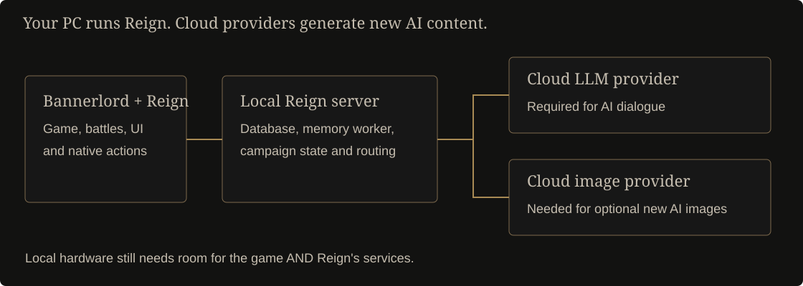

Requirements and resource use
What you need, how the local server and cloud providers fit together, and how to plan for resource use.
What you need before playing
#Reign is a Windows PC single-player mod with a local companion server. You need a licensed Bannerlord installation compatible with your Reign package, its required native modules and installed dependencies, and the launcher's dedicated ReignServer WSL environment. Use a current supported 64-bit Windows installation with WSL 2 and virtualization available. Check the package's supported game version before updating Bannerlord; this guide is not a promise of compatibility with every future release or other mod.
A cloud LLM provider is required for Reign's AI dialogue and generated character responses. Configure a supported provider/account and its credentials in the Control Center, with internet access and sufficient provider allowance or credit. The local Reign server manages the game connection, data, memory, and requests; it is not a replacement for the cloud language model. Some background rules run locally, but that does not make the full AI experience offline.
Ollama Cloud is a cloud text option and uses its own cloud account key. See Provider choices, costs, and privacy for key setup and what to do when a reply contains dialogue only.
A cloud image provider is also required if you enable optional AI-generated portraits or scene images. It is configured separately from dialogue. Working chat does not prove image generation is configured. Existing bundled or cached images can display without generating a new one; new image requests need the selected image route to be available. You can play with optional image generation disabled.
Provider charges and subscription limits belong to the selected service. More conversations, longer exchanges, events, and new images can use more allowance. Never put an API key into NPC chat; save credentials only in the provider settings intended for them.

RAM: plan for the game and the server together
#Reign does not have a verified RAM minimum or typical-use range yet. Use the published base-game requirements below as base-game figures, leave room for the local Reign services, and assess memory pressure during your actual session. A single development session's allocated memory cannot establish a hardware requirement.
| Component | What we can currently say |
|---|---|
| Base Bannerlord, published requirement | The Steam listing gives 6 GB minimum and 8 GB recommended for the base game. These are system requirements, not measured process usage. |
| Reign alongside the game | The local server, database and memory worker need additional resources. Their ordinary and peak usage has not been measured well enough to publish a reliable extra-RAM figure. |
| Your actual session | Campaign age, battle size, settings, other mods and background applications affect memory use. Judge the complete session, including Reign's local services, rather than one process in isolation. |
We will add a typical-use range only after representative measurements during ordinary play, loading, saving and battles. Until then, the base game's figures are identified as base-game figures, and there is no separately certified Reign RAM requirement in this guide.
If you check Task Manager, remember that committed memory is not the same as RAM currently resident in use. Do not count the Windows WSL process and Linux's own memory as two separate copies. If play stutters, inspect actual memory pressure and paging as well as CPU and graphics load.
Processor, graphics, storage, and connection
#| Requirement | Practical guidance |
|---|---|
| CPU | Start with hardware that comfortably runs your intended Bannerlord battles. The published recommended base-game CPUs are Core i5-9600K or Ryzen 5 3600X. Reign adds local simulation and services; no separate Reign minimum CPU has been benchmark-certified. |
| GPU and VRAM | Meet the game/DLC requirements for your chosen settings. The base-game listing recommends GTX 1060 3 GB or Radeon RX 580. Cloud AI generation does not require you to load a large language or image model onto your own GPU, but the game and native portrait rendering still use it. |
| Game storage | Steam lists 60 GB available for base Bannerlord. DLC and other mods can add to this. |
| Reign storage | Keep additional SSD space for the module, shipped portraits, dedicated server environment, database, generated images, saves, backups, and updates. Their size grows with use; a fixed small download size is not the full installed budget. |
| Update and backup headroom | Keep several tens of gigabytes free beyond the installed game as a planning allowance, then monitor actual growth. This is headroom advice, not a measured Reign install-size requirement. A full drive can interrupt saving, database work, or updates. |
| Internet | Required while cloud dialogue or new cloud images are requested. Cloud latency, service outages, and provider limits affect response time even on a fast PC. |
| Local services | Keep the launcher-managed server, database, and memory worker healthy. WSL must have enough memory available; giving all system RAM to the game leaves no room for Reign's services. |
Base-game figures were checked against the official Steam system requirements on November 6, 2026. They do not include Reign or replace the requirements of any DLC you use. Reign-specific RAM measurements remain a follow-up; no new hardware requirement is inferred from a single development snapshot.